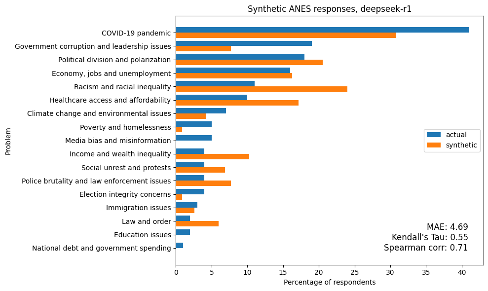
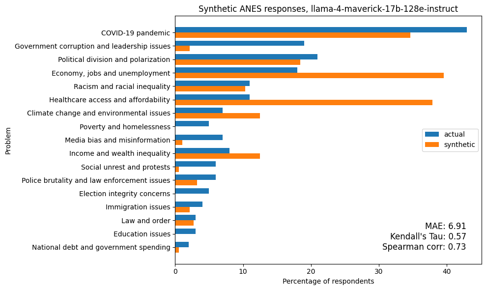

Can Synthetic Consumers Answer Open-Ended Questions?

Evaluating LLMs on generating open-ended text responses
Synthetic consumers are revolutionizing market research by making it faster, less expensive, and more flexible. One especially valuable capability is their ability to generate responses to open-ended questions. This enhances the depth and richness of insights typically associated with qualitative research.
Of course, synthetic consumers are only useful if their responses are similar to those of real people. To see whether they are, we are conducting a series of experiments to test synthetic consumers using public datasets and representative survey questions.
In this previous post, we used data from the General Social Survey to see how well synthetic panels replicate real responses to a categorical question. Our insight? Although some models did better than others, the best responses were about as good as the results from a machine learning algorithm (random forest) trained with data from 3000 respondents.
Now we’re ready for a more challenging test, generating open-ended text.
Identifying the Most Important Problems
We use data from the American National Election Studies (ANES) 2020 Time Series Study, which includes several open-ended questions. The one we’ll look at is “What do you think are the most important problems facing this country?” We chose this question because we expect the responses to be moderately predictable based on demographic information about the respondents.
To see whether the responses we get from synthetic consumers are consistent with real people, we randomly selected a test set of 100 respondents. For each respondent, we collected demographic information including age, gender, race, education, income, occupation, and religious affiliation, as well as responses to the following question about political alignment, “Where would you place yourself on this scale?” from extremely liberal--point 1--to extremely conservative--point 7.
To test synthetic consumers, we composed a prompt with three elements:
- Instructions for the LLM to simulate a respondent with the given demographic profile,
- The text of the ANES question about the most important problems facing the country (quoted above), and
- Instructions to generate “a short open-ended text response that is consistent in content and style with this information about you, and reflects the conditions and topics of discussion in 2020.”
Asking the LLMs to generate responses as if they were asked in 2020 adds an additional challenge to the task. We will see that some models are better at it than others.
To evaluate the responses, we used the LLMs themselves:
- First we collected batches of the real responses and asked LLMs to identify recurring issues. Then we compiled the results into a list of 18 issues.
- Next we iterated through the real responses and prompted an LLM to identify the issues mentioned in the responses. Based on spot checks, these classifications were consistent with our own interpretation. And they were able to correctly classify responses in Spanish as well as responses with non-standard spelling and grammar.
- Finally, we iterated through the generated responses and classified them in the same way.
To evaluate the quality of the synthetic responses, we compute the percentage of real and synthetic respondents who mentioned each issue. The following figure shows the results for one of the models with the best results.

The synthetic results have been scaled to have the same average as the actual results. Although the prompt instructed models to describe no more than three problems, the synthetic responses often included more. In contrast, real respondents mentioned an average of 1.7 problems. We think scaling the results is appropriate because replicating the number of problems real people mention is not an essential part of the task – more important is to replicate the distribution of responses.
To quantify the alignment of the two distributions, we compute these metrics:
- Mean Absolute Error (MAE): measures the average difference in issue frequencies between synthetic and actual responses.
- Kendall’s Tau: measures how well the relative orderings of issue importance align between the two distributions.
- Spearman’s Rank Correlation: captures the overall consistency in the rank orderings of the issues.
The table below shows the models with the lowest MAE, indicating the closest match to actual issue frequencies.
| Model | MAE | Kendall's tau | Spearman corr |
|---|---|---|---|
| deepseek-r1 | 4.69 | 0.55 | 0.71 |
| claude-3-7-sonnet-20250219 | 4.82 | 0.51 | 0.69 |
| claude-3-5-sonnet-20241022 | 5.15 | 0.37 | 0.49 |
| gpt-4 | 6.43 | 0.51 | 0.66 |
| o3-mini | 6.43 | 0.39 | 0.58 |
| o3-mini-2025-01-31 | 6.45 | 0.39 | 0.55 |
| gpt-4.5-preview-2025-02-27 | 6.71 | 0.48 | 0.60 |
| llama-4-maverick-17b-128e-instruct | 6.91 | 0.57 | 0.73 |
The following table highlights the models with the highest Kendall’s tau values, indicating the strongest agreement in issue rankings.
| Model | MAE | Kendall's tau | Spearman corr |
|---|---|---|---|
| llama-4-maverick-17b-128e-instruct | 6.91 | 0.57 | 0.73 |
| deepseek-r1 | 4.69 | 0.55 | 0.71 |
| claude-3-7-sonnet-20250219 | 4.82 | 0.51 | 0.69 |
| gpt-4 | 6.43 | 0.51 | 0.66 |
| gpt-4.5-preview-2025-02-27 | 6.71 | 0.48 | 0.60 |
| llama-4-scout-17b-16e-instruct | 8.00 | 0.47 | 0.63 |
| gpt-4o-mini-2024-07-18 | 8.94 | 0.42 | 0.56 |
| o3-mini | 6.43 | 0.39 | 0.58 |
Top-performing models by both metrics include GPT-4 (OpenAI), Claude 3.7 Sonnet (Anthropic), and DeepSeek R1.
Here are the detailed results from the model with the highest value of tau, Meta Llama 4 Maverick:

Even in the cases with the best metrics, there are hits and misses. In this example, none of the synthetic responses mentioned poverty and homelessness or election integrity. And the model overestimates mentions of the economy and healthcare access.Almost every model overestimated mentions of healthcare access, an issue that became more salient since the data were collected in 2020. This suggests that the models have limited ability to give responses that reflect “the conditions and topics of discussion in 2020”, as they were instructed. However, in a typical use case for synthetic consumers, this kind of time travel is not necessary.
Conclusions
These results suggest that synthetic consumers based on large language models (LLMs) are capable of generating open-ended responses that meaningfully reflect the concerns of real people. While none of the models perfectly replicated the distribution of issues mentioned by respondents in the 2020 ANES survey, several came surprisingly close—especially in reproducing the relative salience of different problems.
Models like DeepSeek R1, Claude 3.7 Sonnet, and GPT-4 performed best across both metrics: they not only estimated issue frequencies with low error but also preserved the ranking of concerns found in real responses. These findings support a broader generalization: the best-performing models are not necessarily the largest, but those that appear to reason more carefully and follow instructions more reliably. Models tuned for alignment and context sensitivity— reasoning models—generally outperform others in this kind of task.
At the same time, most models were not able to satisfy the temporal constraint in the prompt. Many overestimated the salience of issues that gained visibility after 2020, such as healthcare access and inflation. However, in many practical applications, time-specific realism may not be essential.
These results support cautious optimism about using LLM-based synthetic consumers in marketing and qualitative research. They can generate realistic open-ended responses quickly, making it easier to test survey questions, explore audience reactions, or get an early read on how different groups might respond to a campaign.
Work with PyMC Labs
If you are interested in seeing what we at PyMC Labs can do for you, then please email info@pymc-labs.com. We work with companies at a variety of scales and with varying levels of existing modeling capacity. We also run corporate workshop training events and can provide sessions ranging from introduction to Bayes to more advanced topics.